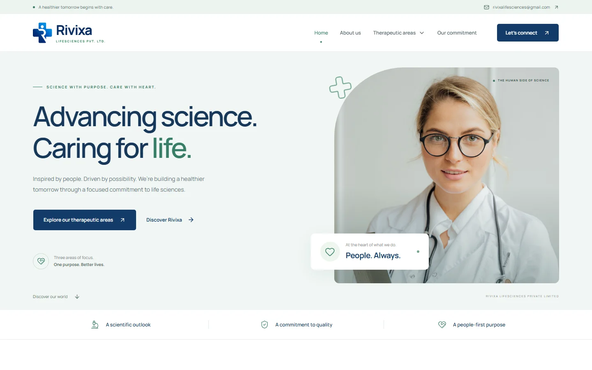

✦ ENGINEERING PARTNER FOR AMBITIOUS TEAMS
Your nextorbit.↗
Every idea has potential.
We build what takes it further.
02 / IGNITION THE AMBITION
The idea is
only the spark.
Digital systems that move business. Strategy, engineering, cloud, AI, security, and operations—delivered by one accountable partner.
Explore our approach ↗03 / ORIENT FIRST, A CLEAR DIRECTION
Less noise.
More signal.
We align on the business outcome, user reality, constraints, risks, and decisions that cannot be postponed.
SHARED BRIEF → OPPORTUNITY MAP → FIRST DELIVERY SLICE
How we find the signal ↗04 / SHAPE CRAFT WITH CONSEQUENCE
Make the complex
feel effortless.
Experience, architecture, data, and operations are shaped together. Responsive interfaces. Purposeful motion. Accessible systems.
Experience systems ↗05 / FLIGHT SYSTEMS CONNECTED BY DESIGN
One crew.
The whole stack.
Deep where it matters. Connected everywhere.
From the first strategic decision to live operations.
Product engineering
Web products, platforms, APIs & modernization.
Experience systems
UX, interfaces, design systems & accessibility.
Cloud & platforms
Architecture, infrastructure & delivery pipelines.
Applied AI
Intelligent search, workflow agents & evaluation.
Messaging & operations
Events, observability, SRE & managed engineering.
Security engineering
Threat modeling, identity & secure delivery.
06 / INFRASTRUCTURE THE FOUNDATION BENEATH THE FLIGHT
Built to rise.
Built to last.
Cloud architecture, platform engineering, CI/CD, and integrations. Reliable foundations that support continuous change without operational chaos.
Cloud & platforms ↗07 / INTELLIGENCE USEFUL, BY DESIGN
Intelligence.
With intent.
AI built around real business processes and trusted data. Intelligent search, workflow agents, and evaluation—with human control designed in.
Applied AI at StackOrcs ↗08 / PROTECT & OPERATE CARE BEYOND THE LAUNCH
Protect the mission.
Keep it moving.
Threat-aware architecture, identity, application security, messaging, monitoring, and incident readiness. Trust is engineered into the product.
09 / MISSION LOG REAL SOFTWARE. REAL WORK.
Proof, in orbit.


ModaStitch
A clothing storefront with product discovery, cart and checkout, inventory controls, and an admin workspace.
Visit project↗Pick a mission. Explore the work behind it.Full work archive ↗
10 / RIVIXA HEALTHCARE & LIFESCIENCES
Science.
Made clear.
A healthcare company website connecting three therapeutic areas, a searchable product catalogue, and product enquiries.
11 / MEETGRID PEOPLE + PLACE + TIME
Less back-and-forth.
More together.
One workspace to match team availability with the right room. Recurring meetings, bookings, and plan-based tools.

12 / CHATSAVER IDEAS WORTH KEEPING
Good conversations.
Lasting knowledge.
A knowledge vault that turns ChatGPT exports into editable, searchable notes. Offline access and cross-device recovery.

13 / THE CREW BUILT AROUND PEOPLE
Serious engineering.
Human partnership.
Technology changes quickly. Good partnership does not. We bring close collaboration, candid decisions, and engineering into one delivery relationship.
Meet StackOrcs ↗14 / YOUR NEXT LAUNCH THE STORY CONTINUES WITH YOU
Next stop.
Your idea.↗
Bring the ambition. Tell us the constraints.
Let's find the right trajectory.